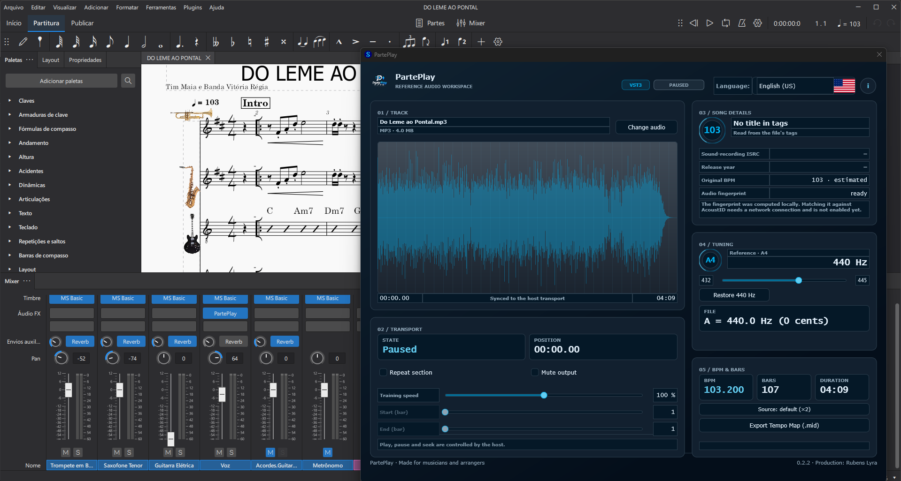

PartePlay
Practice along with the real performance — locked to your score's transport.
v0.2.0-rc.1 · release candidate · free to test now, still in development
AGPL-3.0 · open-source · VST3 for Windows, Linux and macOS

Why it exists
A metronome keeps time, but a real performance keeps music. The problem is keeping a reference recording aligned with the score while you practice in pieces — restarting, looping, stopping. PartePlay treats the audio as a score follower that obeys the host clock instead of its own, so the alignment problem disappears.
What it does today
Audio position derives from the DAW/notation transport (timeInSamples). No internal clock to drift.
Speed 50–150% plus bar-based looping aligned to the detected meter — with sync preserved.
Detects the file's tuning (Hz) and compensates against your reference (432–445 Hz, default 440). Ratio 1.0 plays the original buffer untouched.
BPM, meter (3/4 or 4/4), bar count and tuning, with MIDI 1.0 time-map export for MuseScore and DAWs.
Computes an AcoustID-compatible fingerprint locally (Chromaprint). No cloud, no key in the binary. Online matching and submissions are intentionally off.
pt-BR · en-GB · en-US · es-ES, switchable in the editor. Numbers use each locale's decimal separator.
Install
- Close MuseScore (or your DAW) — the binary is locked while the plugin is loaded.
- Run the installer script (download the release or build it first).
- Install the optional MuseScore notation template.
- Add
PartePlay.vst3as an effect, load your audio, confirm the BPM/bar count — play.
Build from source
cmake --preset msvc
cmake --build --preset msvc --config Release
ctest --preset msvc # 461 checks, 0 failuresPresets also cover ninja, linux, macos and
macos-universal (x86_64 + arm64). Requires CMake 3.22+, a C++17 toolchain and
JUCE 9.0.2 (via JUCE_ROOT). CI builds and tests Windows, Linux and macOS; the
install scripts are PowerShell, so they are Windows-only.
Parameters
| ID | Range / options | Default |
|---|---|---|
referencePitch | 432.0 – 445.0 Hz | 440.0 |
trainingSpeed | 0.50 – 1.50 | 1.00 |
loopEnabled | on / off | false |
loopStart/loopEnd | 1 – 10000 (bar) | 1 |
muted | on / off | false |
Contribute
Conventions, the test gate and the PR contract live in
CONTRIBUTING.md.
Every PR must pass the 461-check suite on three platforms and carry a Signed-off-by
(DCO). All UI strings go through the four-column locale table.